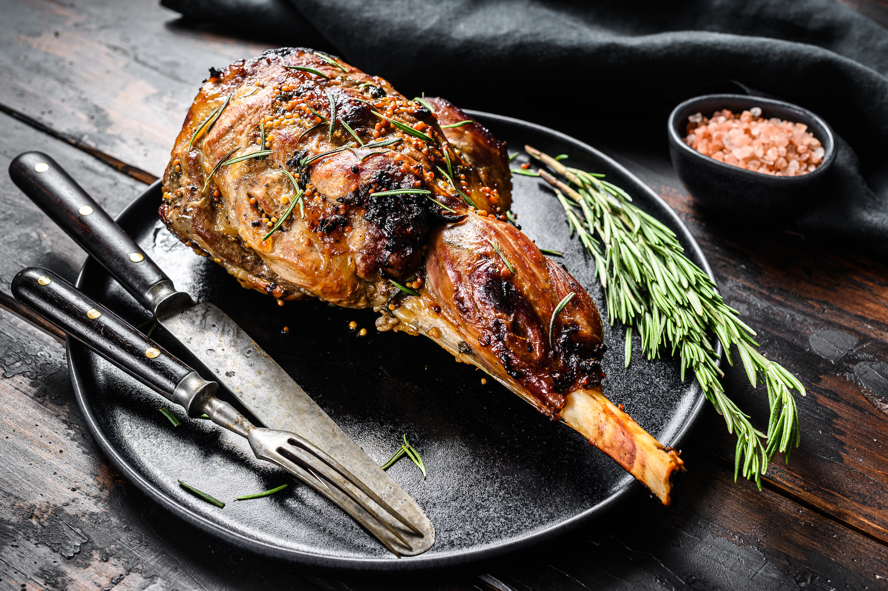

ENTRANTES
- cecina black angus con almendra tostada y aceite arbequina
- verdinas a la cazuela con cigalas y chipirones y toque de salsa cardinal
- croquetas caseras de lechazo
- Escalivada de pimiento tricolor con ventresca del norte y borbollon de escabeche
PLATO PRINCIPAL
- lechazo asado en el horno de leña
DEGUSTACION DE GUARNICIONES
- patata confitada en baja temparatura
- patata fritas naturales con pimiento gernika
DEGUSTACION DE POSTRES
- Merengue relleno de citricos en tierra de pistacho
- Tocinillo de cielo sobre emulsion de dulce leche
- Mini tartaleta de mousse de queso y espuma de frutos rojos
